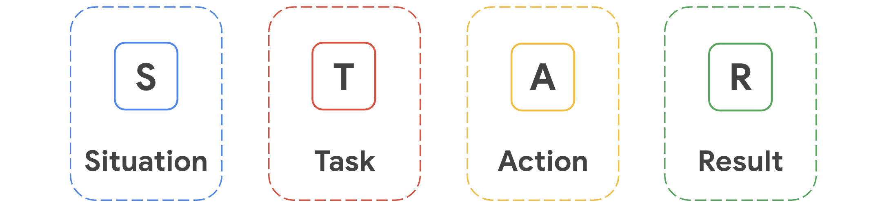

Design a User Experience for Social Good & Prepare for Job
Learn more about designing for social good
To understand designing for social good more deeply, the next video is a case study about designing for social good from Google. You'll learn about how Google's Hardware for Good initiative set out to make life more connected for nursing home residents. Check out these articles to learn more about designing for social good:
- 3 Principles To Guide Designing For Social Change from FastCompany. This piece shares three principles to consider when designing for social good.
- Designing for Social Good, Not "Feel Good " from NextBillion introduces various approaches to product design.
- UX For Social Good from UsabilityGeek will help you start the design thinking process.
Design cross device
As a UX designer, our goal is to always put the user first and keep their needs front and center. When it comes to designing across devices and products, like you'll be doing in this project, there are a couple of approaches you can take.
-
Progressive enhancement
Designing from the smallest screen to the largest screen. The progressive enhancement approach is also known as bottom-up designing, because you first design for the smallest and most basic version of your site, like for a mobile phone, and then embellish your designs for larger screen sizes.
The progressive enhancement approach allows us designers to focus on the basic capabilities of the product we're designing at the beginning of the project. By starting with a small screen size, we have to choose the most important elements to prioritize on the screen. Then we can add more advanced features and interactions as we move to larger devices and screen sizes. As a designer, using the progressive enhancement approach allows you to highlight the most important content from the start, and come up with a clear vision of how the website should appear on all device sizes and types.
Progressive enhancement is closely related to a mobile-first philosophy. A mobile-first philosophy means that we start by designing the mobile version of a product, and later adapt it to fit larger screens, like tablets, laptops, and desktop computers. In the past, many designers started with the desktop version of a website and then tried to adapt it for smaller screens, like tablets and mobile phones. But in recent years, a mobile-first approach has become increasingly popular in the world of UX design. Why? Well, each year, the number of mobile phone users around the world grows. Since we're designing with the users' needs front and center, this means designing for the devices and screen sizes they're using most.
-
Graceful degradation
means designing from the largest screen to smaller screens. The graceful degradation approach is also known as top-down designing, because you start with a large screen with a lot of features and interactions, and work your way down toward a smaller screen, where the features and interactions are scaled back.
The graceful degradation approach became popular among UX designers when desktop computers were the most-used device. We'd start with the desktop version of a website, since that's where the users were most, and then try to adapt our designs for smaller screens, like tablets and mobile phones.
Designing for mobile first
A mobile-first design philosophy is related to the practice of progressive enhancement, which is designing for the smallest and most basic version of a product before creating larger, more complex versions. By starting with a small screen size, designers have to choose the most important elements to prioritize on the screen. This approach contrasts with graceful degradation, which is designing for a larger screen with a lot of features and interactions first, then scaling back the designs to fit a smaller screen.
More people than ever are using mobile devices as a primary means of accessing the internet. According to the World Advertising Research Center, by 2025, 72% of all internet users will use smartphones as their only method of accessing the internet. A large portion of these users are the Next Billion Users, who are the people around the world who are starting to use the internet for the first time, often through mobile devices. The content, interactions, and features of products you design need to be accessible for the Next Billion Users, so a mobile-first philosophy is key. To learn more, this article from Google Design that shares nine ways designers can be more empathetic and effective when creating products for emerging markets.
Mobile-first designs help users quickly access content because fewer elements and features have to load. This is important because mobile phones don’t have as much computer power as desktop computers do. If you design for a larger screen size first, it can be difficult later to incorporate all of the design elements of a complex screen into a smaller one without impacting load time. This is just another reason why a mobile first design philosophy can be useful.
Check out this article about the making of YouTube Gohttps://design.google/library/making-youtube-go, a mobile-first version of YouTube for users who have limited data or don’t have access to a stationary, local network connection.
To explore more on mobile first designs, check out Medium’s What is Mobile First Design? Why It’s Important & How To Make It? article on the importance of mobile first design.
Learn more about designing across devices
As a UX designer, it’s important to consider how the designs you create will adapt for multiple devices, including desktop computers, tablets, mobile phones, smartwatches, TVs, and smart displays. The list of devices with screens that need UX design is growing every day!
As you design across devices, you’ll need to consider the device’s screen size, the interaction between the device and the user, the way content will be organized on various screen sizes, the way users will interact with each device, and more.
To provide a great user experience across devices, keep in mind the four Cs:
- Consistency: Having a uniform design, so users can expect the design to feel familiar across devices and products
- Continuity: Providing users with a smooth and uninterrupted experience as they move between devices
- Context: Designing for the needs of a specific device and the way in which the user will use that device in any given situation
- Complementary: Taking into account how the product design on each device can make the overall user experience better
Check out this blog post on Adobe about how to develop an effective multi-device UX strategy while designing across platforms.
Differences between dedicated mobile apps and responsive web apps.
A dedicated mobile app is built to live on the mobile device and is accessed through an icon of the phone's home screen. Dedicated mobile apps are also called native mobile apps.
A responsive web app is an actual website that adapts to the device the user is on, and is accessed through a mobile phone's web browser.


Portfolio examples
Portfolio builders
Portfolio includes
Case study includes
Personal brand
Posting photos consistent across platforms helps to build a cohesive professional presence online.
designers online comunities:
Want People to Accept Your LinkedIn Requests? Use These 10 Templates

Resorses to write good portfolio
Overview of the UX design interview process
- Pre-interview research: After you apply and before your first interview, you should conduct research on the company and the job. This is the first step in learning more about the role and preparing to answer interview questions. Plus, it’s a good way to know whether you’re a good fit for the position!
- Introductory call or phone screen: The first interview is often in the form of an introductory call with a recruiter or hiring manager. The purpose of this call is to verify whether you meet the minimum set of requirements for the role.
- Design exercise: You might be asked to complete a design exercise before your next interview. A design exercise is a prompt asking you to create a design that solves a specific problem, just like the Sharpen prompts you’ve been completing through the program! You'll usually conduct the design exercise from your own home and will have a certain amount of time to complete the exercise. We'll share more details about design exercises later in the course!
- Second round of interviews: During the second interview, interviewers and hiring managers will explore your experience in more depth, so that the team you’re applying to can understand how closely your background fits the specific role.
- Panel interview: A panel interview is a type of interview that's common during the second round of interviews. You'll meet with a group of people at the same time to assess your skills and learn more about how you interact with a group of people.
- Whiteboard interview: During the whiteboard interview, you’ll really showcase how you work as a UX designer. This interview includes a practical demonstration of your skills in real-time for interviewers to understand your thinking process and overall abilities. If you were asked to complete a design exercise earlier in the process, you might not be asked to complete a whiteboard interview too. We'll share more details about whiteboard interviews soon.
- Portfolio presentation: You’ll present your portfolio website, explain your background in UX design, and talk about your case studies, including the user problem you were solving and your takeaways were from the process. We'll share more details about portfolio presentations later in the course.
- Job offer: The final step of the interview process is the job offer. This is when the hiring manager asks you to join the team!
Check out these resources:
- Prepare for Your Google Interview: UX Design. In this video, Googlers share targeted advice for the UX designers preparing for their first interview.
- How to get a job at Google, interview questions, hiring process. In this article from Googler Don, you’ll review the steps of the interview but from a different perspective.
- How we hire. This extensive collection of materials from the Google Careers team outlines every step of the hiring process, from the job search, to the application, to the offer letter, and everything in between, including a deep look at how to prepare for interviews.
- How to prepare for a UX Interview: Tips from a hiring managerThis non-Google focused article, from UX Collective, goes over the interview process in extensive detail, including some questions to ask and some questions to prepare to answer.
- UX Portfolios: Preparing for Interviews. This video from the Nielsen Norman Group explains how to prepare your portfolio for interviews, since one of the most crucial steps in the process is presenting and defending your portfolio of work.
Prepare for interviews
Phone interview
- Screening Interviews: What Are They?
- 22 Phone Interview Tips to Help You Nail the Call (and Move to the Next Round)
- What Is a Screening Interview? Everything You Need To Know
Whiteboard interview
- Working Through Design Challenges in Product Design Job Interviews
- How to prepare for UX interview design challenges
- The Best Whiteboard Interview Advice I Ever Received
- Crushing the product design whiteboard challenge
- Product Design Exercises We Use At WeWork Interviews
More recourses
Star method
Use the STAR method to answer interview questions clearly and directly. Using the STAR method can make your responses easy to follow and provide a logical structure to each story you share.
- S is for situation. Describe the context around a particular circumstance, challenge, or event you experienced.
- T is for task. Describe your responsibility in this situation. What were you asked to do, or what problem were you asked to solve?
- A is for action. Describe what you did to meet the challenge or solve the problem. Give specific details that demonstrate your abilities in the job.
- R is for result. Describe the outcome of the project or task. Give specific numbers whenever possible to make your results more concrete.
What does the STAR method look like in action? Well, we asked three UX designers at Google to use the STAR method to answer these common UX design interview questions:
- Can you tell me about a time when you did your own research?
- What part of the design process do you enjoy doing the most? Why?
- How have you handled receiving negative feedback about your designs?
Articles
- The STAR Method: The Secret to Acing Your Next Job Interview
- How to Use the STAR Interview Response Method
- How To Use the STAR Interview Response Technique
For this exemplar, the person preparing for an interview expects to be asked:
Can you tell me about a time when you did your own research to understand user needs?
Using the STAR method, the person writes out this possible response:
Recently, I completed a UX certification program where we were tasked with designing an app and website to help individuals limit their food waste. (Situation) The mock organization knew that people wanted to limit waste but didn’t know how to help. (Task) I reached out to interview participants in two categories: people who were already working to mitigate food waste and people who wanted to but didn’t know how to start. Through in-depth interviews, I discovered that the base issue revolved around understanding how long food (both cooked leftovers and fresh ingredients) lasted once it was in their fridge. (Action) That led me to develop a product that helped keep an accurate inventory of food that was easy to update and reminded users when it was time to eat something and how they could use it. (Result)
Elevator pitch
Whiteboard interview
Sources:
Your questions on interview
Review templates for proposals
When you work as a freelance UX designer, potential clients who are impressed by your designs might send you a request for proposal, an official document that outlines project requirements. Or, they may submit an informal request to establish a working relationship with you. Gaining new clients is an exciting chance to practice your design skills. But, before diving into the creating a product, you should respond by sending a proposal.
A proposal outlines your approach to successfully delivering the work a client has requested. These documents are important for establishing an effective working relationship between you and your client. Your proposal also helps to instill confidence in your ability to do the work on time and on budget, while meeting the project objectives. In this reading, you’ll learn about the various materials you might encounter as a freelance UX designer.

Proposals may also include an introduction to you as a designer, your design process divided into phases, and specific payment terms.
To help you develop your own proposal, start with the statement of work template and budget spreadsheet template provided here:
Practicing for interviews is an important skill for your career in UX design. Using Interview Warmup can help you practice interview questions and receive feedback in real time. As you practice, you will gain confidence and be able to prepare more polished responses for common interview questions.
There are a variety of digital templates for creating your resume available through Big Interview